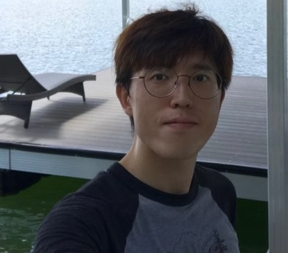

Jaewoo Jung
I am currently a postdoctoral researcher in Global Basic Research Laboratory - Algebra and Geometry of Spaces of Tensors, and Applications (PI: Dr. Kangjin Han).
I received a Ph.D. in mathematics in 2022 from the School of Mathematics at Georgia Tech. My Ph.D. advisor was Dr. Greg Blekherman.
I received a B.Sc. in mathematics in 2014 (and certified master's degree in 2016) from the department of mathematics at Korea University. My (master's and) B.S. advisor was Dr. Euisung Park.
Here is my CV.
Here is my Ph.D. thesis.
Research Interest
- Complex and real algebraic geometry
- Quadratic forms on varieties
- Sums of squares on varieties
- Graph ideals and their syzygies
Papers and preprints
- A combinatorial Approach to α-Ricci and Lin-Lu-Yau Ricci curvatures on Graphs with Y. S. Kwon, S. Lee, J. Park, arXiv:2606.24261, submitted for publication.
- On quadratic persistence and Pythagoras numbers of totally real projective varieties with J. I. Han, E. Park, arXiv:2506.13247, submitted for publication.
- A Fröberg type theorem for higher secant complexes with J. Choe, arXiv:2502.20987, submitted for publication.
- On the rank index of projective curves of almost minimal degree with H. Moon, E. Park, https://doi.org/10.1016/j.jalgebra.2026.02.018, Journal of Algebra (2026).
- An Eisenbud-Goto type inequality for Stanley-Reisner ideals and simplicial complexes with J. Kim, M. Kim, Y. Kim, arXiv:2308.03338, submitted for publication.
- Sums of squares, Hankel index, and almost real rank with G. Blekherman, J. Chen, https://doi.org/10.1017/fms.2024.45, Forum of Mathematics Sigma (2024).
- Bounds on Regularity of Quadratic Monomial Ideals with G. Blekherman, https://doi.org/10.1016/j.jcta.2020.105296, Journal of Combinatorial Theory, Series A (2020).
Contacts
Daegu Gyeongbuk Institute of Science and Technology, Global Basic Research Laboratory-AGSTA
333 Techno Jungang-daero, Hyeonpung-eup, Dalseong-gun,
Daegu, South Korea. Zip: 42988
Email: jaewoojung@dgist.ac.kr
Phone: +82-53-785-6681
Office: E7 L23